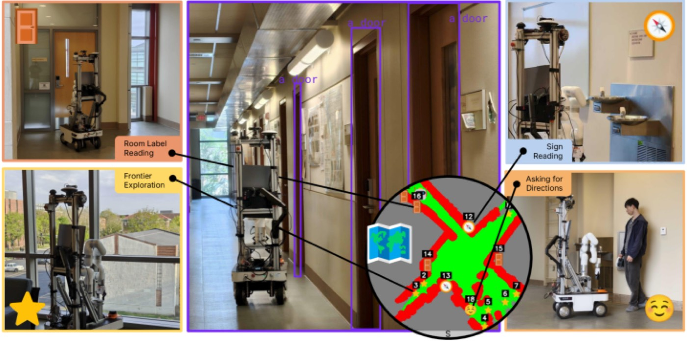

Human-like Navigation in a World Built for Humans (ReasonNav): 핵심 방법론 분석 (Core Methods Analysis)
1. 개요 (Overview)
1.1 출판 정보 (Publication Information)
- 논문 제목 (Paper Title): Human-like Navigation in a World Built for Humans (시스템명: ReasonNav)
- 저자 (Authors): Bhargav Chandaka, Gloria X. Wang, Haozhe Chen, Henry Che, Albert J. Zhai, Shenlong Wang
- 소속 (Affiliation): University of Illinois Urbana-Champaign (UIUC)
- 발표처 (Published): CoRL 2025 (Conference on Robot Learning)
- DOI: https://doi.org/10.48550/arXiv.2509.21189
- arXiv: https://arxiv.org/abs/2509.21189
- GitHub: https://github.com/ReasonNav/ReasonNav (Python 91.2%, 실제 구현 공개 —
src/, Dockerfile, ROS2 빌드 포함) - 프로젝트 페이지: https://reasonnav.github.io/
- 리뷰 일자: 2026-06-29
1.2 연구 목표 (Research Objective)
ReasonNav는 인간이 낯선 건물을 탐색할 때 사용하는 고차원 추론 기술을 로봇 내비게이션에 통합하는 연구다. 인간은 방문한 적 없는 사무실/병원에서 특정 방을 찾을 때 모든 복도를 무작정 탐색하지 않는다. 대신 (1) 방향 표지판을 읽어 방 번호 범위를 좁히고, (2) 마주친 사람에게 길을 물어보며, (3) 방 번호의 규칙성을 추론하여 효율적으로 목표에 도달한다.
핵심 연구 질문:
"인간이 '인간을 위해 설계된 세계(World Built for Humans)'에서
사용하는 표지판 읽기·길 묻기 같은 고차원 추론 기술을
VLM(Vision-Language Model) 기반 에이전트로 구현하면,
대규모·복잡 건물에서 무작정 탐색 대비 얼마나 효율적인가?"
기존 로봇 내비게이션의 두 가지 패러다임이 갖는 한계를 동시에 극복하는 것이 목표다:
| 패러다임 | 대표 방법 | 한계 |
|---|---|---|
| Frontier 기반 탐색 | VLFM, FBE | 인간 단서(표지판/사람)를 활용하지 못하고 미탐사 영역을 기하적으로만 탐색 → 대형 건물에서 비효율 |
| Semantic mapping | CoW, ConceptGraphs | 전역 의미 지도 구축에 막대한 계산/시간 소요, 명시적 고차원 추론 부재 |
ReasonNav는 저수준 스트림(SLAM·경로계획)과 고수준 스트림(VLM 추론)을 분리하고, 그 사이를 landmark 추상화로 연결하여 VLM이 "언어 이해와 추론"에만 집중하게 한다.

Fig.1 저수준 스트림(SLAM, NanoOWL 탐지, Nav2 경로계획)과 고수준 스트림(GPT-4.1 VLM 에이전트, landmark 메모리)의 통합. VLM이 표지판 읽기·인간 상호작용·다음 landmark 선택을 추론으로 결정한다.2. 문제 정의 (Problem Definition)
2.1 도전과제 (Challenges)
A. 무작정 탐색의 비효율 (Exhaustive Search Problem)
대형 건물(논문 실험: 80m+ 길이, 30개 이상 방)에서 특정 방을 찾는 작업은 검색 공간이 너무 크다.
[기존 frontier 기반 탐색의 비효율]
목표: "Room 3027을 찾아라"
Frontier-only 전략:
미탐사 경계(frontier)를 하나씩 방문하며 모든 방 라벨 확인
→ 건물 절반을 헤맬 수 있음 (목표가 반대편에 있다면)
→ 실험에서 No Signs/People 베이스라인 성공률 8.3%
(시간 초과 900s 도달이 대부분)
인간 전략:
① 표지판에서 "Room 3001-3050 → North" 확인 → 절반 즉시 배제
② 사람에게 "3027 어디예요?" → "복도 끝 오른쪽"
③ 방 번호 규칙으로 3025 다음이 3027임을 추론
→ 직선적으로 목표 도달
ReasonNav의 핵심 통찰: 건물은 인간을 위해 설계되었으므로, 인간을 위한 단서(표지판·사람·번호 규칙)가 이미 환경에 존재한다. 이를 활용하지 않는 것은 정보 낭비다.
B. VLM의 강점과 약점의 불일치
VLM(GPT-4.1)을 내비게이션에 직접 투입할 때의 본질적 미스매치:
[VLM 능력의 비대칭성]
VLM이 강한 것:
✅ 언어 이해 ("3027은 3001-3050 범위니까 North")
✅ 상식 추론 ("방 번호는 보통 순차적")
✅ 텍스트/표지판 읽기 (OCR + 의미 파악)
VLM이 약한 것:
❌ 정밀 기하 제어 (좌표·각도·거리 정확한 계산)
❌ 연속 충돌 회피 (실시간 모터 제어)
❌ 픽셀 단위 SLAM 지도 처리
미스매치 결과:
VLM에 raw 센서 데이터를 그대로 주면 → 약점 영역에서 실패
(예: CLIP-on-Wheels는 픽셀 수준 의사결정 → 확장성 한계)
C. 추론과 실행의 인터페이스 부재
고수준 추론(어디로 갈까?)과 저수준 실행(어떻게 갈까?)을 어떻게 연결할 것인가:
[추론-실행 인터페이스 문제]
순진한 접근 (End-to-End):
관측 → VLM → 직접 모터 명령
문제: VLM 추론 주기(~1Hz)와 제어 주기(10Hz+) 불일치
VLM이 정밀 제어 약함 → 충돌·끼임
ReasonNav 해결:
관측 → 저수준 추상화(landmark) → VLM(고수준 선택)
→ behavior primitive(저수준 실행)
→ VLM은 "어느 landmark로?"만 결정
→ 실제 경로계획·충돌회피는 Nav2가 담당
2.2 핵심 해결책
ReasonNav의 세 가지 핵심 설계:
[ReasonNav의 설계 3요소]
설계 1: Landmark 추상화 (Landmark Abstraction)
raw 센서 데이터 → 4종 landmark(Door/Person/Sign/Frontier)
+ JSON 메모리 뱅크 + top-down 지도 시각화
→ VLM 입력을 단순화하여 추론에만 집중
설계 2: Behavior Primitive (행동 프리미티브)
각 landmark 타입마다 전문화된 행동 시퀀스
(접근·스캔·읽기·질문) → 명시적·디버깅 가능
설계 3: 저수준/고수준 스트림 분리 (Dual-Stream)
저수준: SLAM Toolbox + NanoOWL + Nav2 (고주파, 결정론적)
고수준: GPT-4.1 VLM (저주파, 추론적)
→ 각 스트림이 자신의 강점 영역만 담당
3. 핵심 방법론 (Core Methods)
3.1 이중 스트림 아키텍처 (Dual-Stream Architecture)
ReasonNav의 가장 근본적인 설계 결정은 시스템을 저수준 스트림과 고수준 스트림으로 분리한 것이다. 이는 VLM의 약점(정밀 기하 제어)을 결정론적 모듈에 위임하고, 강점(언어·추론)에만 VLM을 투입하는 분업 구조다.
[이중 스트림 구조]
────────────── 저수준 스트림 (고주파, 결정론적) ──────────────
│
│ ┌──────────────┐ 3D LiDAR(Hesai FT120) + 2D LiDAR(Slamtech)
│ │ SLAM Toolbox │ ◄─ 융합하여 occupancy map 생성
│ └──────┬───────┘
│ │
│ ┌──────▼───────┐ RealSense D455 (1280×720 RGB-D, 15FPS)
│ │ NanoOWL │ ◄─ OWL-ViT 최적화 구현, open-vocab 탐지
│ │ (탐지기) │ → Door/Person/Sign 객체 탐지
│ └──────┬───────┘
│ │
│ ┌──────▼───────┐ VLFM 방식: 탐사/미탐사 경계 중점
│ │ Frontier │
│ │ 추출 │
│ └──────┬───────┘
│ │
│ ┌──────▼───────┐ NavFn(wavefront Dijkstra) +
│ │ Nav2 경로계획 │ MPPI 컨트롤러로 경로 실행
│ └──────────────┘
│
─────────────────── Memory Bank (인터페이스) ──────────────────
│
│ 4종 landmark를 JSON으로 누적:
│ Door{room_label, status} / Person{summary} /
│ Sign{cardinal directions+text} / Frontier{pose}
│
────────────── 고수준 스트림 (저주파, 추론적) ──────────────
│
│ ┌──────────────────────────────────┐
│ │ GPT-4.1 VLM 에이전트 │
│ │ 입력 1: JSON landmark 메모리 │
│ │ 입력 2: top-down 지도 시각화 │
│ │ 출력: 다음 방문할 landmark index │
│ └──────────────┬───────────────────┘
│ │
│ ┌──────────────▼───────────────────┐
│ │ Behavior Primitive 실행 │
│ │ (선택된 landmark 타입에 따라) │
│ └──────────────────────────────────┘
이 분리의 핵심 효과는 VLM 호출 빈도 최소화다. VLM은 매 제어 스텝이 아니라 "다음 landmark 선택"이라는 고수준 결정에서만 호출되며(~1Hz 이하), 실제 경로 추종과 충돌 회피는 Nav2가 10Hz+로 처리한다.
3.2 Landmark 추상화 (Landmark Abstraction)
ReasonNav의 핵심 아이디어는 VLM에게 raw 센서 데이터(LiDAR 포인트클라우드, occupancy grid)를 주지 않고, 추상화된 landmark만 제공하는 것이다.
4종 Landmark 정의:
| 타입 | 첨부 정보 | 상태 | 탐지 방법 |
|---|---|---|---|
| Door | room label 텍스트 | Visited/Unvisited | NanoOWL conf 0.3, width (0.5,2.5)m, height (0.5,3)m |
| Person | VLM 요약 노트 (방향 정보) | Visited/Unvisited | NanoOWL conf 0.3, 필터 없음 |
| Sign | {cardinal direction: text} 딕셔너리 | Visited/Unvisited | NanoOWL conf 0.03, width (0.35,0.5)m, height (0.2,0.5)m |
| Frontier | 미탐사 경계 pose | - | VLFM 방식(경계 세그먼트 중점) |
VLM에 제공되는 두 가지 입력:
// 입력 1: JSON landmark 메모리 뱅크
{
"landmark_0": {
"type": "Door",
"room_label": "3027",
"status": "Visited"
},
"landmark_3": {
"type": "Sign",
"directions": {
"North": ["Room 3001-3050"],
"South": ["Room 3101-3200"]
},
"status": "Unvisited"
},
"landmark_5": {
"type": "Person",
"note": "복도 끝 오른쪽으로 가면 3027",
"status": "Unvisited"
},
"landmark_7": {
"type": "Frontier",
"status": "Unvisited"
}
}
// 입력 2: top-down 지도 시각화 (이미지)
- 색상: occupancy(벽=검정) + explored/unexplored 영역
- 각 landmark: 카테고리별 심볼 마커 + index 번호 라벨
- VLM이 공간 배치를 시각적으로 파악
물리적 의미:
- 복잡한 센서 데이터를 "이름표 붙은 객체 목록"으로 압축
- VLM은 "Room 3027은 어느 landmark 근처에 있을까?"라는 추론에만 집중
- index 기반 출력으로 정확한 실행 보장 (좌표를 VLM이 만들 필요 없음)
3.3 Behavior Primitive (행동 프리미티브)
각 landmark 타입마다 전문화된 행동 시퀀스가 정의되어 있다. VLM이 landmark index를 선택하면, 해당 타입의 primitive가 결정론적으로 실행된다.
1. Frontier (탐사):
def frontier_primitive(frontier_pose):
# Nav2 point-goal planner/controller로 frontier 이동
navigate_to_goal(frontier_pose)
# 360도 회전 스캔 → 주변 객체 탐지
rotate_360_and_scan()
# 발견된 Door/Sign/Person을 메모리에 추가
2. Door (방 라벨 읽기):
def door_primitive(door_pose):
# 문에 접근
navigate_close_to(door_pose)
# 카메라 pan하며 room label 탐지기 질의
for pan_angle in camera_pan_range:
if object_detector(img, "room label"):
move_closer()
break
# VLM 호출로 방 번호 읽기 (confidence score 포함)
room_number, conf = vlm_read_door_label(img)
if room_number == goal:
return SUCCESS
memory[door_id].room_label = room_number
3. Person (길 묻기):
def person_primitive(person_pose):
navigate_close_to(person_pose)
# 상호작용 타입을 VLM이 먼저 선택:
# (a) 지시 받기 (b) 방향 묻기 (c) 디렉토리 정보 요청
interaction_type = vlm_select_interaction()
tts_say(question) # text-to-speech
response = stt_listen() # speech-to-text
# VLM이 상대 방향("왼쪽") → 절대 방향(North) 변환
note = vlm_to_cardinal(response, current_heading)
memory[person_id].note = note
4. Directional Sign (표지판 읽기):
def sign_primitive(sign_pose):
navigate_close_to(sign_pose)
# VLM 호출로 표지판 읽기
sign_text = vlm_read_sign(img)
# 화살표 방향 기준 그룹화 → cardinal direction binning
directions = vlm_group_by_arrow(sign_text)
# 예: {North: ["3001-3100"], South: ["3101-3200"]}
memory[sign_id].directions = directions
이 primitive 설계의 강점은 명시성이다. 각 행동이 코드로 정의되어 있어 디버깅이 쉽고, 실패 시 어느 단계에서 문제가 생겼는지 추적 가능하며, 새 landmark 타입(예: 엘리베이터)을 추가하기도 간단하다.
3.4 VLM 프롬프트 구조 (다섯 가지 프롬프트)
ReasonNav는 VLM(GPT-4.1)을 다섯 가지 명확히 분리된 역할로 호출한다:
[5종 VLM 프롬프트]
프롬프트 1: Landmark Selection (핵심 의사결정)
입력: 텍스트 지시 + JSON 메모리 + 지도 이미지
출력: 다음 방문할 landmark index
추론 예: "Room 3027은 Sign에 따르면 North(3001-3050)에 있다.
아직 Unvisited인 Door landmark 4가 North 쪽이니 거기로."
프롬프트 2: Door Reading
입력: 문 라벨 이미지
출력: 방 번호 + confidence score
프롬프트 3: Sign Reading
입력: 표지판 이미지
출력: {방향키: 텍스트} 딕셔너리
프롬프트 4: Human Interaction Type
출력: 3가지 상호작용 모드 중 선택
(지시 받기 / 방향 묻기 / 디렉토리 조회)
프롬프트 5: Conversation Recording
입력: STT 응답 텍스트 + 현재 heading
출력: cardinal direction 노트 (메모리 저장용)
핵심 원리: VLM의 자연어 추론력으로 "어디로 갈까"를 결정하되(프롬프트 1), 출력은 항상 구조화된 형식(index, 딕셔너리, 방향)으로 강제하여 저수준 실행이 정확하게 받아들일 수 있게 한다.
3.5 전체 실행 루프
[ReasonNav 메인 루프]
initialization:
goal_room = parse_user_instruction() # "Find Room 3027"
memory = {} # 빈 landmark 메모리
while not done and time < 900s:
# ── 저수준 스트림 (고주파) ──
occupancy_map = slam_toolbox.update(lidar_2d, lidar_3d)
detections = nanoowl(rgb_image, ["door","person","sign"])
for det in detections:
memory.add_or_update(landmark_from(det))
frontiers = extract_frontiers_vlfm(occupancy_map)
memory.add(frontiers)
# ── 고수준 스트림 (저주파) ──
map_viz = visualize_topdown(occupancy_map, memory)
next_idx = gpt41_select_landmark(goal_room, memory_json, map_viz)
# ── Behavior Primitive 실행 ──
lm = memory[next_idx]
result = execute_primitive(lm.type, lm.pose) # Nav2가 실제 이동
if result == GOAL_REACHED:
return SUCCESS
return TIMEOUT or COLLISION_FAILURE
4. 시스템 아키텍처 (System Architecture)
[ReasonNav 전체 파이프라인 — 데이터 흐름]
═══════════════════ 센서 입력 레이어 ═══════════════════
┌──────────────┬──────────────┬──────────────┬─────────────┐
│ Slamtech 2D │ Hesai FT120 │ RealSense │ Respeaker │
│ LiDAR │ 3D LiDAR │ D455 ×2 │ 마이크 │
│ (저면 근처) │ (상단) │ (pan-tilt+ │ (omni) │
│ │ │ 하방향) │ │
└──────┬───────┴──────┬───────┴──────┬───────┴──────┬──────┘
│ │ │ │
└──────┬───────┘ │ │
▼ ▼ ▼
┌─────────────────┐ ┌──────────────┐ ┌──────────┐
│ SLAM Toolbox │ │ NanoOWL │ │ STT/TTS │
│ (2D+3D 융합) │ │ (OWL-ViT) │ │ │
│ → occupancy map │ │ → 객체 탐지 │ │ │
└────────┬────────┘ └──────┬───────┘ └────┬─────┘
│ │ │
▼ ▼ │
┌─────────────────┐ ┌───────────────┐ │
│ Frontier 추출 │ │ Landmark 생성 │ │
│ (VLFM 방식) │ │ Door/Person/ │ │
│ │ │ Sign │ │
└────────┬────────┘ └───────┬───────┘ │
│ │ │
└─────────┬─────────┘ │
▼ │
╔═════════════════════════════╗ │
║ Memory Bank (JSON) ║◄────────┘
║ index별 landmark + status ║
╚══════════════┬══════════════╝
│
┌──────────┴──────────┐
▼ ▼
┌──────────────────┐ ┌──────────────────┐
│ JSON 메모리 직렬화 │ │ top-down 지도 │
│ (텍스트) │ │ 시각화 (이미지) │
└────────┬─────────┘ └────────┬─────────┘
└──────────┬──────────┘
▼
╔═════════════════════════════╗
║ GPT-4.1 VLM 에이전트 ║
║ (인터넷 API 호출) ║
║ → landmark index 선택 ║
╚══════════════┬══════════════╝
▼
┌──────────────────────────────┐
│ Behavior Primitive 디스패치 │
│ Frontier / Door / Person / │
│ Sign │
└──────────────┬───────────────┘
▼
┌──────────────────────────────┐
│ Nav2 (NavFn + MPPI) │
│ 실제 경로계획 + 모터 제어 │
└──────────────┬───────────────┘
▼
┌─────────────────────┐
│ 다음 스텝으로 진행 │
└─────────────────────┘
하드웨어 플랫폼:
AgileX Ranger Mini 2.0 (4륜 조향, 옴니디렉셔널)
+ UFACTORY xArm7 (7-DoF, 현재 미사용)
+ Lenovo Legion 5i (NVIDIA 4070, ROS2 Humble)
총 비용: ~$35k
4.1 데이터 흐름 설명
저수준 사이클 (고주파, 결정론적):
- 2D+3D LiDAR를 SLAM Toolbox가 융합 → occupancy map 갱신
- RealSense RGB-D(1280×720, 15FPS) → NanoOWL이 Door/Person/Sign 탐지
- VLFM 방식으로 frontier(미탐사 경계 중점) 추출
- 탐지·frontier를 Memory Bank에 landmark로 누적
고수준 사이클 (저주파, 추론적):
- Memory Bank를 JSON 직렬화 + top-down 지도 이미지 생성
- GPT-4.1 API 호출 → 다음 방문 landmark index 선택
- 선택된 landmark 타입에 맞는 behavior primitive 디스패치
- primitive 내부에서 Nav2(NavFn+MPPI)가 실제 이동 수행
- 도착 후 새 관측으로 메모리 갱신, 루프 반복
이 분업 구조의 핵심은 인터넷 의존성의 국소화다. GPT-4.1 API 호출은 고수준 결정(landmark 선택, 읽기, 대화 처리)에만 필요하며, 저수준 SLAM·탐지·경로계획은 모두 온보드(NVIDIA 4070)에서 처리된다.
5. 실험 결과 및 성능 (Experimental Results)
5.1 데이터셋 / 평가 환경 (Datasets & Environments)
ReasonNav는 표준 VLN 벤치마크(R2R/RxR)를 사용하지 않는다. 대신 실세계 캠퍼스 건물과 자체 구축 Isaac Sim 병원 환경에서 평가한다. 이는 ReasonNav가 표지판·사람·방 번호 같은 "인간을 위한 단서"가 풍부한 현실적 건물을 타겟으로 하기 때문이다.
| 환경 | 플랫폼 | 규모 | trial 수 | 특징 |
|---|---|---|---|---|
| Building A | 실세계 (UIUC 캠퍼스) | 80m+ 길이 | 10 | 다목적 건물, 표지판·사람·가구 |
| Building B | 실세계 (UIUC 캠퍼스) | 80m+ 길이 | 2 | 다목적 건물 |
| Hospital | Isaac Sim | 30+ 방 (3001~3041) | 14 | 포토리얼리스틱 병원, NPC 11명 |
Isaac Sim 병원 벤치마크 (신규 기여):
[Isaac Sim 병원 환경 구성]
규모: 30개 이상 방 (사무실/수술실/검사실/병실)
방 번호: 3001 ~ 3041
표지판: 4개 주요 위치에 directional sign 배치
NPC: 11명 (의사/간호사/환자로 분류)
→ 각 NPC가 지식 베이스 보유 (길 안내 가능)
구역: 상담·지원·검사·접수·대기·계단·공용 서비스 구역
기존 Habitat과의 차이:
Habitat = high-level 내비게이션 중심, 로봇 상호작용 부재
Isaac Sim = 물리 시뮬레이션 + 로봇 역학 + NPC 상호작용
→ ReasonNav의 표지판 읽기·길 묻기 평가에 적합
5.2 평가 지표 (Evaluation Metrics)
| 지표 | 정의 |
|---|---|
| Success Rate (%) | 로봇이 목표 방에 도달 + 방 번호를 읽고 작업 완료를 인지한 비율 |
| Avg Duration (s) | 에피소드 평균 소요 시간 |
| Avg Distance (m) | 평균 이동 거리 |
실패 페널티: 충돌 또는 15분(900s) 시간 초과로 실패한 에피소드는 duration=900s, distance=100m로 페널티 부여. 성공 판정이 단순 근접이 아니라 "방 번호를 읽고 완료를 인지"하는 것이라는 점이 엄격하다 — 목표 방 앞을 지나쳐도 라벨을 못 읽으면 실패.
5.3 정량적 결과 (Quantitative Results)
Table 1: 실세계 결과 (Building A & B)
| 방법 | A 성공(%) | B 성공(%) | A Duration(s) | B Duration(s) | A Distance(m) | B Distance(m) | 평균 성공(%) |
|---|---|---|---|---|---|---|---|
| No Signs/People | 10 | 0 | 817.00 | 900 | 90.48 | 100 | 8.3 |
| No Map Image | 20 | 0 | 679.72 | 900 | 73.52 | 100 | 16.6 |
| Ours (ReasonNav) | 50 | 100 | 572.35 | 232.63 | 60.28 | 12.61 | 58.3 |
핵심 발견 (실세계):
- ReasonNav 58.3% vs No Signs/People 8.3% → +50%p (표지판·사람 단서가 결정적)
- Building B(10 trials 중 2 trials)에서 100% 성공 + 232.63s/12.61m로 극히 효율적
- No Map Image(JSON만, 16.6%)와 비교해도 +41.7%p → 지도 시각화가 공간 추론에 중요
- Duration: ReasonNav 평균 ~570s(A) vs baseline 800s+ → 무작정 탐색 대비 시간 대폭 절감
Table 2: 시뮬레이션 결과 (Hospital, 14 trials)
| 방법 | Success Rate(%) | Duration(s) | Distance(m) |
|---|---|---|---|
| No Signs/People | 42.86 | 710.76 | 75.56 |
| No Map Image | 14.29 | 860.72 | 123.95 |
| Ours (ReasonNav) | 57.14 | 608.99 | 72.53 |
핵심 발견 (시뮬레이션):
- ReasonNav 57.14% vs No Signs/People 42.86% → +14.3%p
- No Map Image(14.29%)는 시뮬에서 가장 낮음 — JSON만으로는 방문 landmark를 반복 선택하여 timeout
- ReasonNav가 Duration·Distance 모두 최소 → 효율성에서도 우위
Table 4: VLM/JSON 제거 어블레이션 (시뮬레이션)
| 방법 | Success Rate(%) |
|---|---|
| No VLM (closest) | 35.71 |
| No VLM (random) | 28.57 |
| No JSON | 0 |
| Ours (ReasonNav) | 57.14 |
어블레이션 해석:
No VLM (closest): 가장 가까운 unvisited landmark 선택 (휴리스틱)
→ 35.71% — VLM 추론 없이도 근접 휴리스틱은 어느 정도 작동
→ 그러나 ReasonNav 대비 -21.4%p (추론의 가치)
No VLM (random): 무작위 unvisited landmark 선택
→ 28.57% — 무작위는 더 나쁨 (당연)
No JSON: VLM에 지도 이미지만 제공 (텍스트 메모리 없음)
→ 0% — VLM이 이미 방문한 landmark를 반복 선택 → 전부 timeout
→ JSON 메모리의 "Visited/Unvisited 상태"가 필수적임을 입증
→ 가장 극적인 결과는 No JSON의 0%다. 지도 이미지만으로는 VLM이 방문 이력을 추적하지 못해 같은 landmark를 무한 반복한다. 텍스트 형식의 명시적 상태 메모리가 시스템의 핵심 의존성임을 보여준다.
Table 3: 실패 원인 분석
| 실패 원인 | 실세계(%) | 시뮬(%) |
|---|---|---|
| Incorrect Detection (오탐지) | 33.33 | 21.43 |
| Detection Missed (미탐지) | 26.67 | 21.43 |
| Reasoning Failure (추론 오류) | 20.00 | 7.14 |
| Incorrect Human Info (잘못된 인간 정보) | 13.33 | 0.00 |
| SLAM Failure | 6.67 | 14.29 |
| Planner/Controller Failure | 0.00 | 28.57 |
실패 분석 해석:
- 실세계: 지각(perception) 오류가 지배적 — 오탐지(33.33%)+미탐지(26.67%) = 60% (포스터를 표지판으로 오인식 등). NanoOWL 탐지기의 강건성이 병목.
- 시뮬레이션: 저수준 내비게이션이 지배적 — Planner/Controller Failure 28.57% (Nav2가 좁은 복도·장애물에서 경로계획 실패). 시뮬은 탐지가 깨끗한 대신, 좁은 공간 제어가 어려움.
- 공통: Reasoning Failure(VLM 자체 추론 오류)는 실세계 20%, 시뮬 7.14% — VLM 추론보다 저수준 지각/제어가 더 큰 병목.
5.4 리얼월드 실험 (Real-world Experiments)
ReasonNav는 자체 제작 모바일 로봇으로 실세계 실험을 수행한다. 플랫폼 사양이 매우 구체적으로 공개되어 있다.
[로봇 플랫폼 상세]
모바일 베이스: AgileX Ranger Mini 2.0
- 4륜 조향(4-wheel steering)
- 옴니디렉셔널 모션 가능
- 온보드 전원 공급
센서:
- Slamtech 2D LiDAR (베이스 근처)
- Hesai FT120 솔리드스테이트 3D LiDAR (상단)
- RealSense D455 ×2 (pan-tilt + 하방향)
→ 1280×720 RGB-D, 15FPS
- Respeaker 옴니디렉셔널 마이크 (음성 상호작용)
- Ardusimple simpleRTK3B GPS (미사용)
매니퓰레이터:
- UFACTORY xArm7 (7-DoF, 현재 미사용)
컴퓨트:
- Lenovo Legion 5i 노트북 (NVIDIA 4070 GPU)
- ROS2 Humble
- 인터넷 연결(GPT-4.1 API 호출용)
총 비용: ~$35k
실험 환경: UIUC 캠퍼스 2개 다목적 건물(각 80m+ 길이), 12개 trial(A: 10, B: 2). 각 trial은 서로 다른 시작/목표 위치.
실세계 결과 요약:
- 평균 58.3% 성공률, baseline(No Signs/People) 8.3% 대비 +50%p
- Building B에서 100% 성공(2 trials), 232.63s/12.61m로 매우 효율적
- 주요 실패 원인은 지각(오탐지+미탐지 60%)이며, VLM 추론 자체는 비교적 안정적(20%)
실세계 한계: 7-DoF 팔(xArm7)과 GPS는 현재 미사용이며, 실세계 trial 수(12개)가 통계적으로 충분치 않다(신뢰구간 미제시). 두 건물 모두 동일 대학 캠퍼스로 환경 다양성이 제한적이다.
6. 핵심 기여점 (Key Contributions)
기여 1: 인간 단서 활용 내비게이션 프레임워크
ReasonNav는 "건물이 인간을 위해 설계되었다"는 통찰에서 출발하여, 표지판 읽기·길 묻기·방 번호 추론을 통합한 최초의 실용적 VLM 내비게이션 시스템이다. 기존 frontier/semantic-mapping 방법이 무시한 환경 내 인간 단서를 1차 정보원으로 활용한다.
[기존 방법 대비 핵심 차별점]
VLFM/frontier 기반:
미탐사 경계를 기하적으로만 탐색
→ 표지판이 있어도 활용 못 함
CoW/semantic mapping:
전역 의미 지도 구축 (시간·계산 비용 큼)
→ 명시적 고차원 추론 부재
ReasonNav:
표지판 "North: 3001-3050" → 절반 즉시 배제
사람 "복도 끝 오른쪽" → 직접 안내
→ 탐색 공간을 추론으로 능동 축소
→ 성공률 8.3% → 58.3% (실세계)
기여 2: Landmark 추상화 인터페이스
raw 센서 데이터를 4종 landmark(JSON 메모리 + 지도 시각화)로 추상화하여 VLM이 "언어 이해와 추론"에만 집중하게 한 것이 핵심 설계 기여다. No JSON 어블레이션(0% 성공)이 이 추상화의 필수성을 극적으로 입증한다.
기여 3: Behavior Primitive 설계
각 landmark 타입마다 전문화된 행동(접근·스캔·읽기·질문)을 명시적 프로그램으로 정의했다. 이는 학습된 정책이 아니라 결정론적 행동이므로 디버깅·확장이 용이하다.
기여 4: Isaac Sim 병원 벤치마크
기존 Habitat이 로봇 상호작용을 다루지 못하는 한계를 보완하여, 포토리얼리스틱 병원 환경(30+방, 11 NPC, 표지판 4개)을 Isaac Sim으로 구축했다. NPC가 지식 베이스를 갖고 길 안내를 제공하여, 표지판 읽기·길 묻기를 정량 평가할 수 있는 재현 가능한 벤치마크다.
기여 5: 완전 공개 + 저비용 실증
GitHub에 ROS2 기반 전체 시스템 코드를 공개(Python 91.2%)하고, ~$35k의 상용 부품 로봇으로 실증했다. 실세계 배포 재현성이 높다.
7. 구현 상세 (Implementation Details)
7.1 핵심 컴포넌트
[주요 컴포넌트 사양]
VLM: GPT-4.1 (API 호출, 인터넷 필요)
탐지기: NanoOWL (OWL-ViT 최적화 구현, open-vocabulary)
SLAM: SLAM Toolbox (2D+3D LiDAR 융합)
경로계획: NavFn (wavefront Dijkstra, Nav2)
경로실행: MPPI 컨트롤러
Frontier: VLFM 방식 (탐사/미탐사 경계 세그먼트 중점)
음성: TTS + STT (인간 상호작용)
미들웨어: ROS2 Humble
추가 의존성: Bing Search API (디렉토리 조회용)
7.2 탐지 임계치 (NanoOWL)
[NanoOWL 탐지 임계치 — 객체별 정밀 튜닝]
Door:
confidence 0.3
width (0.5, 2.5)m
height (0.5, 3.0)m
Room label:
confidence 0.04 ← 매우 낮음 (작은 텍스트 라벨)
width (0, 0.4)m
height (0, 0.15)m
Sign:
confidence 0.03 ← 매우 낮음
width (0.35, 0.5)m
height (0.2, 0.5)m
Person:
confidence 0.3
추가 필터 없음
room label과 sign의 confidence 임계치가 0.03~0.04로 극히 낮은 것이 주목할 만하다. 작은 텍스트 객체를 놓치지 않기 위한 선택이지만, 이는 동시에 오탐지(실세계 실패의 33.33%)의 직접 원인이기도 하다 — 포스터·게시물을 표지판으로 잘못 잡는 trade-off.
7.3 코드 공개 구조
GitHub(https://github.com/ReasonNav/ReasonNav)에 실제 구현이 공개되어 있다(placeholder 아님, Python 91.2%):
[ReasonNav 레포 구조 (실제 공개)]
ReasonNav/
├── .devcontainer/ # 개발 컨테이너 설정
├── docker_settings/ # Docker 설정
├── scripts/ # 유틸리티 스크립트
├── src/ # ★ 메인 구현 (Python)
├── Dockerfile
├── docker-compose.yaml
├── Makefile
├── requirements.txt
└── .gitmodules # git 서브모듈
실행 요구사항:
ROS 2, Linux, NVIDIA GPU,
OpenAI API key (GPT-4.1),
Bing Search API key (디렉토리 조회)
언어 분포: Python 91.2% + C++/CMake/Shell/Dockerfile
8. 고급 주제 (Advanced Topics)
8.1 확장성 분석
VLM 교체 가능성: ReasonNav는 GPT-4.1을 API로 호출하므로, 더 강력한 VLM(GPT-5, Claude, Gemini)으로 교체 시 추론 품질 향상이 기대된다. Landmark 추상화 인터페이스가 VLM-agnostic하게 설계되어 모델 교체가 용이하다. 단, 실세계 추론 실패가 20%에 불과하므로(지각 60% 대비), VLM 업그레이드의 한계 효용은 제한적일 수 있다.
탐지기 강건성: 실세계 실패의 60%(오탐지+미탐지)가 NanoOWL 지각에서 발생한다. 더 강력한 open-vocabulary 탐지기(Grounding-DINO, fine-tuned OWLv2)로 교체하거나, 표지판/포스터 구분을 위한 도메인 특화 fine-tuning이 가장 큰 성능 향상 여지다.
저수준 제어 개선: 시뮬레이션 실패의 28.57%가 Nav2 경로계획/제어에서 발생한다(좁은 복도). 옴니디렉셔널 베이스(Ranger Mini)의 측면 이동 능력을 더 활용하는 컨트롤러나, footprint-aware 경로계획이 필요하다.
8.2 한계점 (Limitations)
한계 1: 지각의 cascading 오류
저수준 탐지기 오류 → 잘못된 landmark → VLM 오판 → 전체 실패
구체적 케이스:
- 포스터를 directional sign으로 오인식 (실세계 33.33%)
- 사람/표지판을 놓침 (미탐지 26.67%)
- confidence 0.03~0.04의 낮은 임계치가 오탐지 유발
미해결: 강건한 탐지 + 오탐지 필터링 필요
한계 2: 절대 성능의 한계
- 실세계 58.3%, 시뮬 57.14% — 배송/안내 같은 고신뢰 응용(99%+)에는 미달
- 절반에 가까운 trial이 여전히 실패
한계 3: 동적/협력 환경 가정
- NPC가 정적이고 협력적(정확한 길 안내 제공)이라고 가정
- 실세계에서 사람이 이동하거나 모르는 경우 처리 미흡
- Incorrect Human Info(잘못된 인간 정보)가 실세계 실패의 13.33%
한계 4: 인터넷/API 의존성
- 매 고수준 결정마다 GPT-4.1 API 호출 → 비용·레이턴시·오프라인 불가
- Bing Search API까지 필요 → 외부 서비스 의존성 누적
- 프라이버시: 건물 이미지/환경 정보를 외부 API로 전송
한계 5: 통계적 검증 부족
- 실세계 12 trials + 시뮬 14 trials = 26 total
- 신뢰구간 미제시, 단일 대학 캠퍼스 2개 건물만 검증
- 쇼핑몰·호텔·아파트 등 다양한 건물 미테스트, 실외/다층 미처리
한계 6: 미사용 하드웨어
- xArm7(7-DoF 팔), GPS가 장착되어 있으나 미사용 → 시스템 복잡도/비용 대비 활용도 낮음
8.3 향후 연구 방향
[향후 연구 방향]
방향 1: 탐지기 강건성 (최우선)
실세계 실패의 60%가 지각 → 도메인 특화 탐지 fine-tuning
표지판 vs 포스터 구분, OCR 강화
방향 2: 다층 건물 확장
엘리베이터/계단 처리 → behavior primitive 추가
다층 SLAM, 층간 경로계획
방향 3: 동적 인간 처리
움직이는 NPC, 모르는 사람 케이스
사람 추적 + 재질의 전략
방향 4: 오프라인 VLM
로컬 VLM(Qwen-VL, LLaVA)으로 API 의존 제거
엣지 배포, 프라이버시 보호
방향 5: 학습 기반 primitive
현재 결정론적 primitive → 학습으로 적응적 행동
좁은 공간 통과를 위한 RL 컨트롤러
9. 비교 분석 (Comparative Analysis)
ReasonNav는 표준 R2R/RxR 연속 환경 VLN과는 다른 트랙에 속한다 — 대형 건물 객체 탐색(object/room goal navigation) + 인간 단서 활용이다. 가장 가까운 선행 VLN 리뷰 논문들과 비교한다.
9.1 기존 리뷰 논문과의 비교
| 특성 | NaVILA (RSS2025) | StreamVLN (ICRA2026) | AwareVLN (CVPR2026) | ReasonNav (CoRL2025) |
|---|---|---|---|---|
| 학회 | RSS 2025 | ICRA 2026 | CVPR 2026 | CoRL 2025 |
| 태스크 | R2R/RxR 지시 추종 | R2R/RxR 지시 추종 | R2R/RxR 지시 추종 | 대형 건물 방 찾기 |
| 추론 방식 | 암묵적(end-to-end) | 암묵적 + SlowFast | 선택적 구조 추론 | VLM 명시적 landmark 추론 |
| VLM | LLaMA-3 8B | Qwen2-VL | LLaMA-3 8B | GPT-4.1 (API) |
| 입력 추상화 | RGB 비디오 | RGB 비디오 | RGB 8프레임 | JSON landmark + 지도 |
| 인간 상호작용 | ❌ | ❌ | ❌ | ✅ 길 묻기 (TTS/STT) |
| 표지판 읽기 | ❌ | ❌ | ❌ | ✅ |
| 실세계 | ✅ (Go2 다리로봇) | ✅ (Go2) | ✅ (복도/가정/사무실) | ✅ ($35k 자체 로봇, 80m 건물) |
| 평가 환경 | Habitat 시뮬 | Habitat 시뮬 | Habitat 시뮬 | 실세계 + Isaac Sim 병원 |
| 코드 공개 | ✅ | Project Page | ✅ Apache-2.0 | ✅ (ROS2, Python 91.2%) |
| 성공률 | R2R 54.0% | R2R 56.9% | R2R 65.4% | 실세계 58.3%, 시뮬 57.14% |
주의: 성공률은 태스크 정의가 다르므로 직접 비교 불가. NaVILA/StreamVLN/AwareVLN은 R2R/RxR의 "지시 추종 + 3m 내 정지"인 반면, ReasonNav는 "대형 건물에서 방 번호를 읽고 완료 인지"로 훨씬 긴 지평의 탐색 태스크다.
9.2 장단점 분석
ReasonNav의 장점:
- 태스크 현실성: R2R/RxR의 짧은 단일 경로 지시가 아니라, 80m+ 대형 건물에서 방을 능동 탐색하는 실용적 시나리오
- 인간 단서 활용: 표지판 읽기·길 묻기를 통합한 유일한 방법 — 환경의 인간 친화적 정보를 1차 활용
- 모듈 분리의 명확성: 저수준(결정론적)/고수준(추론적) 분리로 각 모듈 독립 개선 가능
- 재현성: ROS2 전체 코드 공개 + 구체적 $35k 하드웨어 명세 + Isaac Sim 벤치마크 공개
- No JSON 0% 입증: 어블레이션이 메모리 추상화의 필수성을 정량적으로 증명
ReasonNav의 단점:
- 절대 성능 낮음: 58.3%/57.14% — AwareVLN(R2R 65.4%) 등 지시 추종 SOTA 대비 낮으나, 태스크 난이도가 달라 직접 비교는 부적절
- 지각 병목: 실세계 실패의 60%가 NanoOWL 탐지 오류 — 시스템의 약한 고리
- API 의존: GPT-4.1 + Bing API → 오프라인 불가, 비용·레이턴시·프라이버시 이슈
- 소규모 검증: 26 trials, 단일 캠퍼스 2개 건물 — 통계적 신뢰성 제한
- 학습 요소 부재: behavior primitive가 전부 수작업 정의 → 새 환경 적응에 수동 튜닝 필요
NaVILA 대비:
- NaVILA는 다리로봇(Go2) 로코모션까지 통합한 VLA, R2R/RxR 지시 추종에 특화
- ReasonNav는 휠 베이스 + 고수준 추론에 집중, 지시 추종이 아닌 능동 방 탐색
- NaVILA가 "지시를 정확히 따르기"라면 ReasonNav는 "단서로 목표를 능동 탐색하기" — 상호보완적
StreamVLN 대비:
- StreamVLN은 SlowFast 컨텍스트 모델링으로 비디오 스트림 효율 처리
- ReasonNav는 VLM 호출 자체를 landmark 선택으로 희소화하여 효율 확보
- 둘 다 "VLM 호출 비용 절감"을 추구하나, StreamVLN은 컨텍스트 압축, ReasonNav는 추상화 인터페이스로 접근
AwareVLN 대비:
- AwareVLN은 자기인식 추론(씬/진행도/계획)을 단일 VLM 내부에서 수행, R2R/RxR SOTA
- ReasonNav는 추론을 외부 GPT-4.1 API로 위임하고 landmark 선택에 한정
- AwareVLN의 "진행도 평가"와 ReasonNav의 "표지판/사람 단서 통합"은 결합 가능 — 자기인식 추론 + 인간 단서 활용
9.3 실적용 가능성 평가
강점:
- 실세계 80m+ 건물에서 실증 → 즉시 배포 가능한 형태
- $35k 상용 부품 + ROS2 → 산업 재현 용이
- 표지판/사람 활용 → 사전 지도 없는 신규 건물에 적용 가능
약점:
- 58.3% 성공률 → 배송/안내 같은 고신뢰 응용에는 추가 개발 필요
- 인터넷 API 의존 → 보안 민감 환경(병원/정부 건물) 배포 제약
- 동적 인간·다층 미처리
배포 권장사항:
추천 환경: 표지판·방 번호가 명확한 단층 실내
(사무실, 단층 병원동, 공공기관)
추천 응용: 방문객 안내, 시설 점검 (저신뢰 허용 태스크)
주의: 배송 등 고신뢰 응용, 다층 건물,
동적 인파, 오프라인 요구 환경은 부적합
9.4 연구 방향성 평가
ReasonNav는 VLN 연구에서 "환경의 인간 친화적 단서를 1차 정보원으로"라는 새로운 방향을 개척했다. 기존 VLN이 지시 텍스트와 시각 관측의 정렬에 집중했다면, ReasonNav는 표지판·사람·번호 규칙이라는 "메타 정보"를 추론으로 활용한다.
이 방향성의 의의:
- 탐색 효율: 단서 활용으로 탐색 공간을 능동 축소 (8.3% → 58.3%)
- 현실 정합성: 실제 인간이 건물을 탐색하는 방식과 일치
- 모듈성: 저수준/고수준 분리로 각 분야 발전을 독립 흡수
향후 추론 증강 VLN(AwareVLN)의 자기인식과 ReasonNav의 인간 단서 활용이 결합된다면, 신뢰성·효율성·설명 가능성을 동시에 갖춘 실세계 내비게이션이 가능할 것이다.
10. 참고 문헌 (References)
- Chandaka et al. (2025). Human-like Navigation in a World Built for Humans (ReasonNav). CoRL 2025. arXiv:2509.21189.
- Yokoyama et al. (2024). VLFM: Vision-Language Frontier Maps for Zero-Shot Semantic Navigation. ICRA 2024.
- Macenski et al. (2020). The Marathon 2: A Navigation System (Nav2). IROS 2020.
- Macenski & Jambrecic (2021). SLAM Toolbox: SLAM for the dynamic world. JOSS.
- Minderer et al. (2022). Simple Open-Vocabulary Object Detection with Vision Transformers (OWL-ViT). ECCV 2022.
- Gadre et al. (2023). CoWs on Pasture: Baselines and Benchmarks for Language-Driven Zero-Shot Object Navigation (CLIP-on-Wheels). CVPR 2023.
- Cheng et al. (2024). NaVILA: Legged Robot Vision-Language-Action Model for Navigation. RSS 2025.
- Wang et al. (2026). StreamVLN: Streaming Vision-and-Language Navigation via SlowFast Context Modeling. ICRA 2026.
- Anderson et al. (2018). Vision-and-Language Navigation: Interpreting visually-grounded navigation instructions in real environments. CVPR 2018.
- NVIDIA (2023). Isaac Sim: Robotics simulation and synthetic data generation.
- NanoOWL: A TensorRT optimized OWL-ViT. NVIDIA-AI-IOT.
11. 결론 (Conclusion)
혁신성 평가
ReasonNav는 "건물은 인간을 위해 설계되었으므로, 인간을 위한 단서(표지판·사람·번호 규칙)가 이미 환경에 존재한다"는 통찰을 VLM 기반 내비게이션으로 구현한 CoRL 2025 논문이다. 핵심 혁신은 두 가지다.
첫째, landmark 추상화로 저수준 스트림(SLAM·탐지·Nav2)과 고수준 스트림(GPT-4.1 추론)을 분리하여, VLM이 약점(정밀 기하 제어)을 피하고 강점(언어·추론)에만 집중하게 했다. No JSON 어블레이션의 0% 성공률이 이 추상화 인터페이스의 필수성을 극적으로 증명한다.
둘째, 표지판 읽기·길 묻기·방 번호 추론이라는 인간 고유의 내비게이션 기술을 behavior primitive로 통합하여, 무작정 탐색(8.3%) 대비 실세계 58.3%의 성공률을 달성했다.
실용적 의의
80m+ 실세계 캠퍼스 건물에서 $35k 상용 부품 로봇으로 실증하고, ROS2 전체 코드를 공개했다는 점에서 재현성과 실용성이 높다. 추가로 Isaac Sim 병원 벤치마크(30+방, 11 NPC)를 공개하여 표지판 읽기·길 묻기를 정량 평가할 수 있는 재현 가능한 테스트베드를 제공했다.
향후 연구 방향
가장 중요한 과제는 지각 강건성이다. 실세계 실패의 60%가 NanoOWL 탐지 오류(특히 포스터-표지판 혼동)에서 발생하므로, 도메인 특화 탐지 fine-tuning이 가장 큰 성능 향상 여지다. 그 다음으로 다층 건물(엘리베이터), 동적 인간, 오프라인 VLM이 실세계 배포의 핵심 과제다.
[ReasonNav 종합 평가]
혁신성: ⭐⭐⭐⭐ (인간 단서 활용 + landmark 추상화)
기술 완성도: ⭐⭐⭐⭐ (이중 스트림, 충분한 어블레이션, 실패 분석)
실험 규모: ⭐⭐⭐ (실세계 12 + 시뮬 14 = 26 trials, 단일 캠퍼스)
실용성: ⭐⭐⭐⭐ (실세계 실증, $35k 재현 가능, ROS2 코드 공개)
한계: ⭐⭐⭐ (58.3% 절대 성능, 지각 병목, API 의존)
종합: Strong — 실세계 VLM 내비게이션의 실증적 이정표
ReasonNav는 절대 성능(58.3%)은 아직 고신뢰 응용에 미달하나, "환경의 인간 친화적 단서를 추론으로 활용한다"는 명확한 방향성과 완전한 실세계 실증·코드 공개로, 향후 실용적 VLM 내비게이션 연구의 중요한 출발점이 된다.